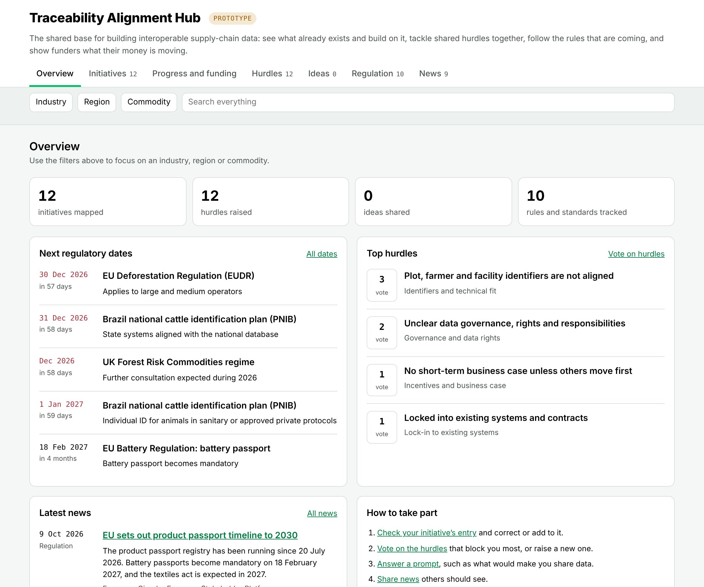
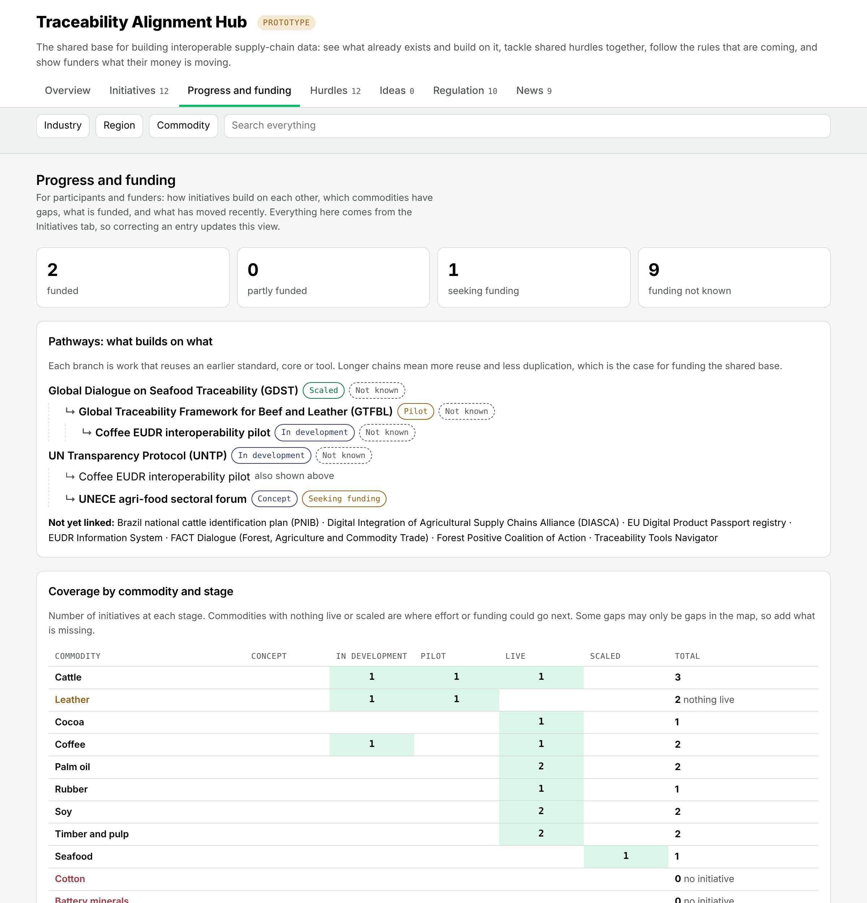
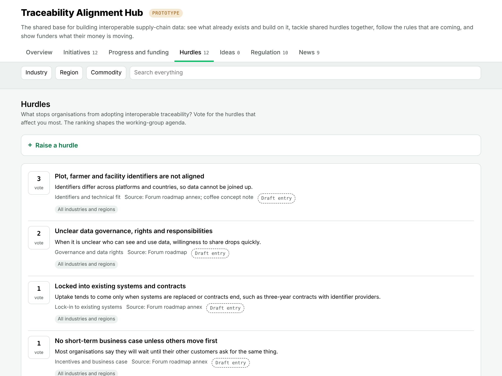
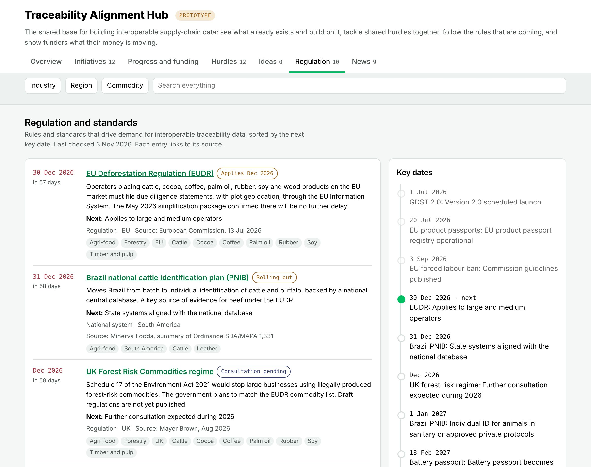

The people the forum needs are already stretched across other initiatives. Meetings alone won’t carry alignment. An online hub lets participants contribute when it suits them, builds the forum’s evidence base as it goes, and shows everyone, funders included, what is moving.
A living map of initiatives, kept up to date by the initiatives themselves, showing what each one does, how far it has got, and which earlier work it reuses. New efforts start from what is already there.
Participants raise hurdles and vote on them. The forum gets a ranked, evidence-based agenda for its working groups instead of one drawn from a few conversations.
Progress, coverage gaps and funding status in one view, so participants see the bigger picture and funders can back reuse rather than duplication.
The hub doesn’t replace convening. It makes each meeting count by doing the gathering, ranking and follow-up in between.
| Roadmap activity | What the hub provides | What changes for participants |
|---|---|---|
| A. Support existing initiatives | InitiativesPathways A crowd-sourced map of initiatives, and a view of which work builds on which. | Initiatives correct their own entry once, instead of briefing the forum repeatedly. The “shared pathways to interoperability” in the roadmap update themselves. |
| B. Support champions | IdeasNews Set questions to answer, support votes, and a shared feed of developments. | Champions get material to take back inside their organisations, such as answers to “what would you need to tell your finance director?” |
| C. Thematic knowledge-sharing | Hurdles A ranked list of shared hurdles, filterable by industry, region and commodity. | Working-group topics come from what participants vote for, and each group starts with the evidence already gathered. |
| D. Finding resources | Progress and funding What is funded, what is seeking funding, and where the coverage gaps are. | Funders see where a grant unlocks reuse by others. Joint fundraising starts from a shared picture. |
| Policy and regulation | Regulation A tracker of the rules and standards driving demand, with countdowns and sources. | A reason to come back even with nothing to post, and a common reference for talks with regulators. |




Visibility for their work beyond their own network, lessons from others, and a voice in shared rules without another standing meeting.
One place to see which standards are converging, what regulation requires and when, and where their data effort can be reused.
A view of industry practice and blockers to inform implementation, and a channel to producer-country systems.
What their money is moving, what builds on what, and where the gaps are, so they can fund the shared base rather than parallel efforts.
Most online platforms like this go quiet within months. These are the things that prevent that.
Seed it with the 10 to 15 initiatives the forum already works with, and invite each lead to correct their entry.
Run the hurdles vote ahead of the first steering group, and use the ranking to set the working-group topics.
Send the first monthly digest with the top hurdles, regulatory dates and what changed.
Review after three months: did it cut meetings and repeated requests, and did initiatives keep their entries current?